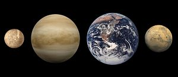
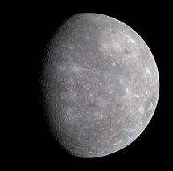
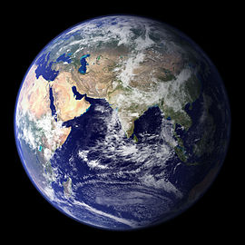

Планеты земной группы
Планеты земной группы — четыре планеты Солнечной системы: Меркурий, Венера, Земля и Марс. Их ещё называют внутренними планетами, в отличие от внешних планет — планет-гигантов.
Планеты земной группы обладают высокой плотностью и состоят преимущественно из силикатов и металлического железа (в отличие от газовых планет и каменно-ледяных карликовых планет).
Наибольшая планета земной группы — Земля.
Планеты земной группы состоят главным образом из кислорода, кремния, железа, магния, алюминия и других тяжёлых элементов.
Из планет земной группы коры нет у Меркурия, что объясняют её разрушением в результате метеоритной бомбардировки.
Земля отличается от других планет земной группы высокой степенью химической дифференциации вещества и широким распространением гранитов в коре.
Две из планет земной группы (самые далёкие от Солнца — Земля и Марс) имеют спутники. Ни одна из них (в отличие от всех планет-гигантов) не имеет колец.
Считается, что землеподобные планеты наиболее благоприятны для возникновения жизни, поэтому их поиск привлекает пристальное внимание общественности. Так в декабре 2005 года учёные из Института космических наук (Пасадена, Калифорния) сообщили об обнаружении похожей на Солнце звезды, вокруг которой предположительно формируются скалистые планеты. В дальнейшем были обнаружены планеты, которые лишь в несколько раз массивнее Земли и, вероятно, должны иметь твёрдую поверхность.
Меркурий
{kind=link}
Меркурий — самая близкая к Солнцу планета Солнечной системы, обращающаяся вокруг Солнца за 88 земных суток. Продолжительность одних звёздных суток на Меркурии составляет 58,65 земных, а солнечных — 176 земных. Планета названа древними римлянами в честь бога торговли — быстроногого Меркурия, поскольку она движется по небу быстрее других планет.
Меркурий относится к внутренним планетам, так как его орбита лежит внутри орбиты Земли. После лишения Плутона в 2006 году статуса планеты Меркурию перешло звание самой маленькой планеты Солнечной системы. Видимая звёздная величина Меркурия колеблется от −1,9 до 5,5, но его нелегко заметить по причине небольшого углового расстояния от Солнца (максимум 28,3°). О планете пока известно сравнительно немного. Только в 2009 году учёные составили первую полную карту Меркурия, используя снимки аппаратов «Маринер-10» и «Мессенджер». Естественных спутников у планеты не обнаружено.
Меркурий — самая маленькая планета земной группы. Его радиус составляет всего 2439,7 ± 1,0 км, что меньше радиуса спутника Юпитера Ганимеда и спутника Сатурна Титана. Масса планеты равна 3,3·1023 кг. Средняя плотность Меркурия довольно велика — 5,43 г/см³, что лишь незначительно меньше плотности Земли. Учитывая, что Земля намного больше по размерам, значение плотности Меркурия указывает на повышенное содержание в его недрах металлов. Ускорение свободного падения на Меркурии равно 3,70 м/с². Вторая космическая скорость — 4,25 км/с. Несмотря на меньший радиус, Меркурий всё же превосходит по массе такие спутники планет-гигантов, как Ганимед и Титан.
Астрономический символ Меркурия представляет собой стилизованное изображение крылатого шлема бога Меркурия с его кадуцеем.
Венера

Венера — вторая внутренняя планета Солнечной системы с периодом обращения в 224,7 земных суток. Названа именем Венеры, богини любви из римского пантеона. Это единственная из восьми основных планет Солнечной системы, получившая название в честь женского божества.
Венера — третий по яркости объект на небе Земли после Солнца и Луны и достигает видимой звёздной величины в −4,6. Поскольку Венера ближе к Солнцу, чем Земля, она никогда не удаляется от Солнца более чем на 47,8° (для земного наблюдателя). Лучше всего она видна незадолго до восхода или через некоторое время после захода Солнца, что дало повод называть её также Вечерняя звезда или Утренняя звезда.
Венера классифицируется как землеподобная планета, и иногда её называют «сестрой Земли», потому что обе планеты похожи размерами, силой тяжести и составом. Однако условия на двух планетах очень разнятся. Поверхность Венеры скрывают чрезвычайно густые облака серной кислоты с высокой отражательной способностью, что мешает увидеть её поверхность в видимом свете (но её атмосфера прозрачна для радиоволн, с помощью которых впоследствии и был исследован рельеф планеты). Споры о том, что находится под густой облачностью Венеры, продолжались до двадцатого столетия, пока многие из тайн Венеры не были приоткрыты планетологией. У Венеры самая плотная среди известных землеподобных планет атмосфера, состоящая главным образом из углекислого газа. Это объясняется тем, что на Венере нет круговорота углерода и жизни, которая могла бы перерабатывать его в биомассу.
Земля
{kind=link}
Земля — третья от Солнца планета. Пятая по размеру среди всех планет Солнечной системы. Она является также крупнейшей по диаметру, массе и плотности среди планет земной группы.
Иногда упоминается как Мир, Голубая планета, иногда Терра (от лат. Terra). Единственное известное человеку на данный момент тело Солнечной системы в частности и Вселенной вообще, населённое живыми организмами.
Научные данные указывают на то, что Земля образовалась из солнечной туманности около 4,54 миллиарда лет назад и вскоре после этого приобрела свой единственный естественный спутник — Луну. Предположительно жизнь появилась на Земле примерно 3,9 млрд лет назад, то есть в течение первого миллиарда после её возникновения. С тех пор биосфера Земли значительно изменила атмосферу и прочие абиотические факторы, обусловив количественный рост аэробных организмов, а также формирование озонового слоя, который вместе с магнитным полем Земли ослабляет вредную для жизни солнечную радиацию, тем самым сохраняя условия существования жизни на Земле. Радиация, обусловленная самой земной корой, со времён её образования значительно снизилась благодаря постепенному распаду радионуклидов в ней. Кора Земли разделена на несколько сегментов, или тектонических плит, которые движутся по поверхности со скоростями порядка нескольких сантиметров в год. Изучением состава, строения и закономерностей развития Земли занимается наука геология.
Приблизительно 70,8 % поверхности планеты занимает Мировой океан, остальную часть поверхности занимают континенты и острова. На материках расположены реки, озёра, подземные воды и льды, вместе с Мировым океаном они составляют гидросферу. Жидкая вода, необходимая для всех известных жизненных форм, не существует на поверхности какой-либо из известных планет и планетоидов Солнечной системы, кроме Земли. Полюса Земли покрыты ледяным панцирем, который включает в себя морской лёд Арктики и антарктический ледяной щит.
Марс

Марс — четвёртая по удалённости от Солнца и седьмая по размерам планета Солнечной системы; масса планеты составляет 10,7 % массы Земли. Названа в честь Марса — древнеримского бога войны, соответствующего древнегреческому Аресу. Иногда Марс называют «красной планетой» из-за красноватого оттенка поверхности, придаваемого ей оксидом железа.
Марс — планета земной группы с разреженной атмосферой (давление у поверхности в 160 раз меньше земного). Особенностями поверхностного рельефа Марса можно считать ударные кратеры наподобие лунных, а также вулканы, долины, пустыни и полярные ледниковые шапки наподобие земных.
У Марса есть два естественных спутника — Фобос и Деймос (в переводе с древнегреческого — «страх» и «ужас» — имена двух сыновей Ареса, сопровождавших его в бою), которые относительно малы (Фобос — 27×22×18 км, Деймос — 15×12,2×10,4 км) и имеют неправильную форму.
Рельеф Марса обладает многими уникальными чертами. Марсианский потухший вулкан гора Олимп — самая высокая известная гора на планетах Солнечной системы (самая высокая известная гора в Солнечной системе на астероиде Веста), а долины Маринер — самый крупный известный каньон. Помимо этого, в июне 2008 года три статьи, опубликованные в журнале «Nature», представили доказательства существования в северном полушарии Марса самого крупного известного ударного кратера в Солнечной системе. Его длина — 10,6 тыс. км, а ширина — 8,5 тыс. км, что примерно в четыре раза больше, чем крупнейший ударный кратер, до того также обнаруженный на Марсе, вблизи его южного полюса.
В дополнение к схожести поверхностного рельефа, Марс имеет период вращения и смену времён года аналогичные земным, но его климат значительно холоднее и суше земного.